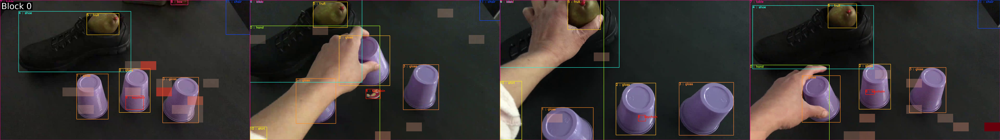

Use Perception Test as a benchmark for VLM interpretability and win prizes!
The goal of the Interpretability track is to encourage the development of techniques that provide insights into how state-of-the-art perception models make their decisions. Methods can be varied in nature, i.e. behavioral/black-box, mechanistic, or simply visualizations that explain why a model succeeds or fails at one or more Perception Test tasks.
Participants will be asked to submit a colab notebook demonstrating their explanations or predictions on example videos from the Perception Test benchmark, as well as a short tech report (max 2 pages).
Bonus points for works that leverage the different types of annotations in the Perception Test to design quantitative explainability methods, e.g. show correlations between saliency / attention maps produced when answering videoQAs and ground truth object tracks.
You can use any method you prefer, as long as it highlights convincingly how a model solves (or fails at solving) some task in the Perception Test. We provide a starter kit with examples for generating visualizations on videos from the Perception Test, as well as some reference papers for possible directions to investigate.
In Perception Test, there are 132 unique questions in the multiple-choice videoQA dataset. Each question is applied to multiple videos (from 20 videos up to more than 1000 videos). We define as Perception Test task a videoQA and the videos it is applied to across train / valid / test splits of the benchmark.
A meaningful interpretability method should identify a pattern or explanation that applies to all videos within one or more tasks.As an example, one focus could be counting cups in cup-game videos, which are identified by the question
"The person uses multiple similar objects to play an occlusion game. How many such objects does the person use?".
There are 116 (out of 2184) train, 305 (out of 5900) valid, and 189 (out of 3525) test videos; see example below.These videos also have ground truth annotations for object tracks, action segments, and sound segments that can be used to prove that the model is paying attention to the relevant spatio-temporal regions in the frames.
Featured at the top of this page is an example of a visualization using the ground truth object tracks overlaid with the visual attention from PerceptionLM using 4 frames as input. At intermediate layers, we can see where the model pays particular attention to (some of the cups, but also other areas!):
Here is what the maximum activation over all of the layers looks like overlaid on the video frames. 
You can find this visualization in the PerceptionLM demo notebook linked above. An immediate interesting question which has been tackled before in vision but not for video is to better understand how this attention is geometrically distributed with respect to the bounding boxes. This notebook provides a jump start for those interested in this type of analysis, as well as others enabled by the powerful flexibility of TransformerLens. Some suggested resources ideas, to directy your investigation but are by no means necessary to follow:Can we predict the accuracy of our model without labels, perhaps from some other signals in the video? This paper tries to do so for LLMs by training a meta-model on top of confidence scores.
How well can mechanistic interpretability tools be used VLMs, and by extension Video-Language Models (VidLMs)? There are existing papers which use logit lens ([1], [2]) to analyze object hallucinations, tracking them to low confidence logit readouts and poor visual attention activity in early layers. How do we extend these to VidLMs, and how to we aggregate the information across frames?
Other papers ([3]) have looked at the geometric distribution of attention in the image as an indicator for how well LLaVA models can do spatial reasoning. Can we use our ground truth object bounding labels to also analyze how informative these attention maps are for accurate video reasoning?
Submissions will be evaluated single-blind by the organising team, and the best submissions will receive prizes. Ideal submissions will have the following characteristics:
The timeline for this track follows the main challenge:
Upload your final colab notebook files and short tech reports to this Google Form (TODO: add unified form).